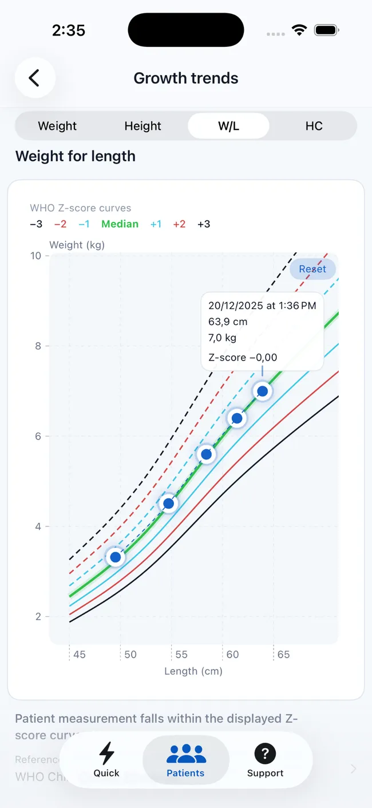

Start with the question
A growth chart is specific to an indicator
“The growth chart” is not one universal graph. Each chart relates a particular measurement to age or to another body measurement. The indicator should match the question being considered and the measurements that were collected.
Weight-for-age
Compares weight with the reference distribution for age and sex.
Length or height-for-age
Compares recumbent length or standing height with age and sex.
Weight-for-length or height
Relates weight to linear growth rather than to chronological age alone.
BMI-for-age
Relates body mass index to the age- and sex-specific reference.
Head-circumference-for-age
Relates head circumference to age where that indicator and age range apply.
Two children can have the same percentile on one indicator and different results on another. State the indicator whenever you communicate a percentile or Z-score.
Use the appropriate WHO standard or reference
The WHO Child Growth Standards describe growth from birth to 5 years. The WHO 2007 growth reference covers ages 5 to 19 years. The available indicators and valid age ranges differ, so age is part of choosing the correct chart—not merely a value placed on its horizontal axis.
Two views of position
Z-scores and percentiles describe the reference distribution differently
A Z-score expresses how far and in which direction a measurement lies from the reference median, using the variability defined by that growth standard. A Z-score of 0 is at the reference median; positive and negative values lie above and below it.
A percentile expresses rank within the reference distribution. The 50th percentile is the median. A percentile is not the percentage of “ideal growth,” and it does not tell you how much a child should gain.
Interpretation depends on the indicator, measurement quality, age, clinical context, and pattern over time. A result should not be acted on in isolation.
Why Z-scores can be useful
Z-scores preserve numerical distance from the reference median and are therefore useful for comparing changes across time or indicators. Percentiles can be more familiar in conversation, but large changes near the center and tails of a distribution do not translate uniformly.

The longitudinal view
A single point shows position. Repeated points show trajectory.
One accurate measurement locates the child on a reference chart at one moment. Repeated accurate measurements show whether the trajectory is broadly stable or changing. That pattern can be more useful than attaching too much meaning to one percentile.
The timing between measurements, illness, gestational history, measurement technique, and other clinical information all influence interpretation. A visible change should prompt review of the data and context, not an automatic conclusion.
Track growth with PediaMetricsMeasurement quality first
A precise calculation cannot rescue an inaccurate input
Before interpreting a chart, confirm the child's identity, date of birth, measurement date, sex used by the selected reference, units, and technique. Length and standing height are not interchangeable labels, and a decimal or unit error can move a plotted point dramatically.
PediaMetrics adds measurement checks to the input workflow and can flag unlikely values or possible unit mistakes. These warnings support review; they do not replace correct equipment, technique, or repeat measurement when a value is questionable.
How PediaMetrics bridges calculation and follow-up
- Enter measurements once for applicable WHO growth calculations.
- Review Z-scores, percentiles, and classifications together.
- See measurement warnings before relying on unavailable or questionable results.
- Save profiles and measurement history locally on the device.
- Plot eligible measurements on interactive WHO curves.
- Generate structured PDF reports for documentation or communication.
Primary references
Growth-chart FAQ
Common questions
Concise answers to the concepts most often confused.
What does a percentile mean on a child growth chart?
It expresses the child's measurement as a rank relative to the selected reference distribution for the same age and sex. It does not, by itself, diagnose a growth problem.
What does a pediatric Z-score mean?
It expresses how far and in which direction the measurement lies from the reference median, using the variability defined by that growth standard.
Is the 50th percentile the only normal result?
No. The 50th percentile is the reference median, not an individual target. Interpretation considers the indicator, pattern, measurement quality, and clinical context.
Why do repeated measurements matter?
They reveal trajectory. A longitudinal pattern provides context that one Z-score or percentile cannot.
Can PediaMetrics replace a clinical assessment?
No. It supports calculation, visualization, and documentation but does not replace professional medical judgment, diagnosis, or treatment decisions.
Put the guide into practice
Calculate and follow WHO growth results in PediaMetrics.
Turn measurements into applicable Z-scores, percentiles, charts, histories, and reports on iPhone and iPad.

Continue